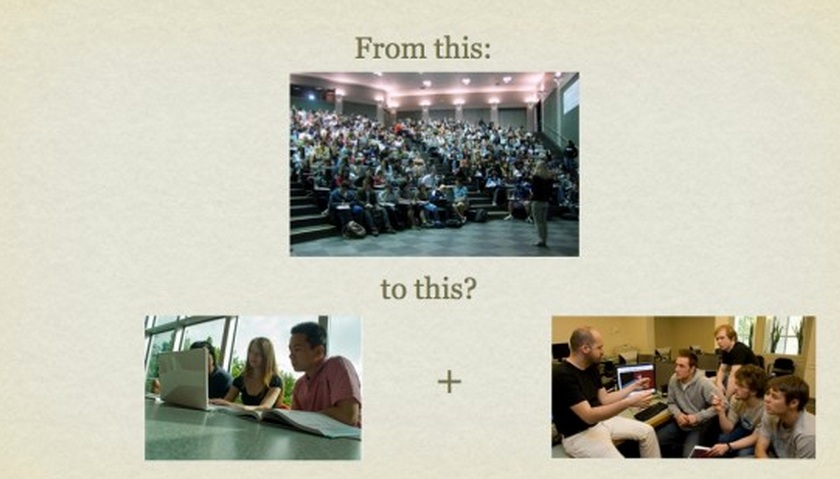
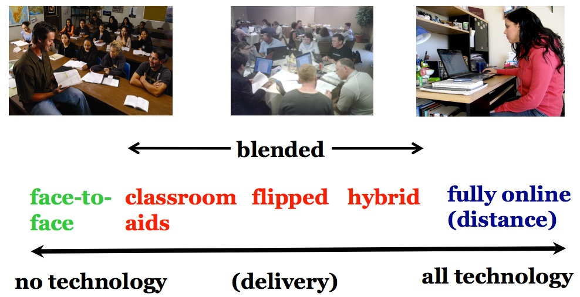
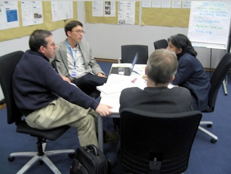
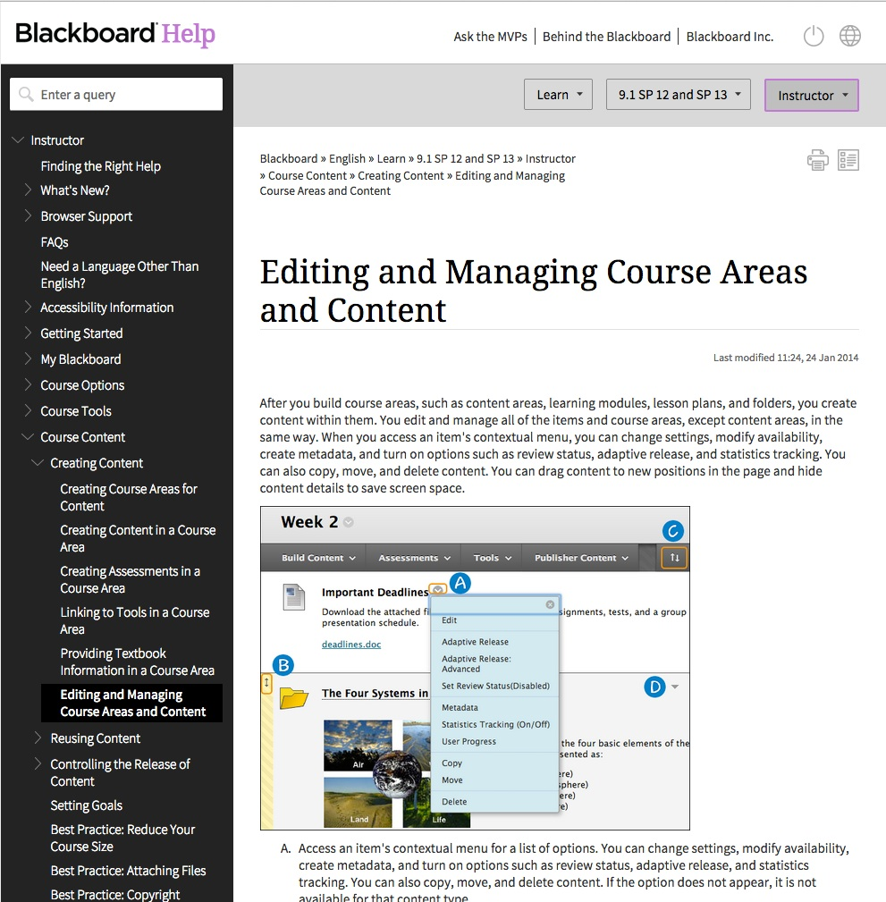
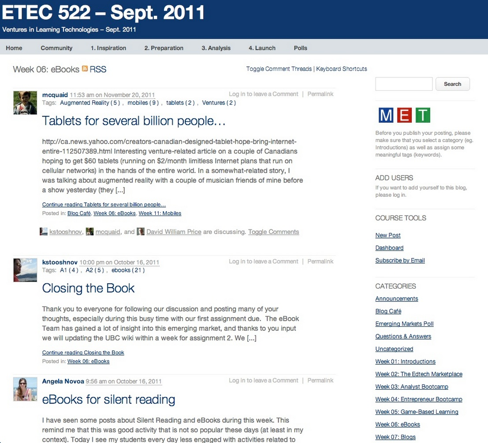
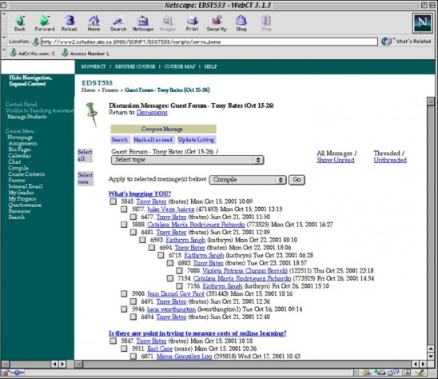
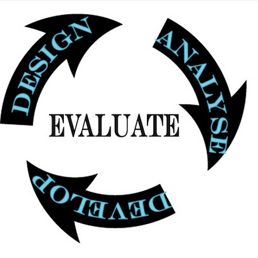

Chapter 11
Teaching in a Digital Age
Also in this chapter you will find the following activities:
If you have followed the journey through all the previous chapters of this book, you will have been subject to a great deal of information: philosophical, empirical, technological, and administrative, set within a framework of issues related to the needs of learners in a digital age. It is now time to pull all this together into a pragmatic set of action steps that will enable you to apply these ideas and concepts within the everyday circumstances of teaching.
Thus the aim of this chapter is to provide some practical guidelines for teachers and instructors to ensure quality teaching in a digital age. This will mean drawing on all the previous chapters in this book. Before I do this, however, it is necessary to clarify what is meant by ‘quality’ in teaching and learning, because I am using ‘quality’ here in a very specific way.
Probably there is no other topic in education which generates so much discussion and controversy as ‘quality’. Many books have been written on the topic, but I will cut to the chase and give my definition of quality up-front. For the purposes of this book, quality is defined as:
teaching methods that successfully help learners develop the knowledge and skills they will require in a digital age.
This of course is my short answer to the question of what is quality. A longer answer means looking, at least briefly, at:
This will then provide the foundations for my recommendations for quality teaching that will follow in this chapter.
Most governments act to protect consumers in the education market by ensuring that institutions are properly accredited and the qualifications they award are valid and are recognised as of being of ‘quality.’ However, the manner in which institutions and degrees are accredited varies a great deal. The main difference is between the USA and virtually any other country.
The U.S. Department of Education’s Network for Education Information states in its description of accreditation and quality assurance in the USA:
Accreditation is the process used in U.S. education to ensure that schools, postsecondary institutions, and other education providers meet, and maintain, minimum standards of quality and integrity regarding academics, administration, and related services. It is a voluntary process based on the principle of academic self-governance. Schools, postsecondary institutions and programs (faculties) within institutions participate in accreditation. The entities which conduct accreditation are associations comprised of institutions and academic specialists in specific subjects, who establish and enforce standards of membership and procedures for conducting the accreditation process.
Both the federal and state governments recognize accreditation as the mechanism by which institutional and programmatic legitimacy are ensured. In international terms, accreditation by a recognized accrediting authority is accepted as the U.S. equivalent of other countries’ ministerial recognition of institutions belonging to national education systems.
In other words, in the USA, accreditation and quality assurance is effectively self-regulated by the educational institutions through their control of accreditation agencies, although the government does have some ‘weapons of enforcement’, mainly through the withdrawal of student financial aid for students at any institution that the U.S. Department of Education deems to be failing to meet standards.
In many other countries, government has the ultimate authority to accredit institutions and approve degrees, although in countries such as Canada and the United Kingdom, this too is often exercised by arm’s length agencies appointed by government, but consisting mainly of representatives from the various institutions within the system. These bodies have a variety of names, but Degree Quality Assurance Board is a typical title.
However, in recent years, some regulatory agencies such as the United Kingdom’s Quality Assurance Agency for Higher Education have adopted formal quality assurance processes based on practices that originated in industry. The U.K. QAA’s Quality Code for Higher Education which aims to guide universities on what the QAA is looking for runs to several hundred pages. Chapter B3 on Learning and Teaching is 25 pages long and has seven indicators of quality. Indicator 4 is typical:
Higher education providers assure themselves that everyone involved in teaching or supporting student learning is appropriately qualified, supported and developed.
Many institutions as a result of pressure from external agencies have therefore put in place formal quality assurance processes over and beyond the normal academic approval processes (see Clarke-Okah et al., 2014, for a typical, low-cost example).
It can be seen then that the internal processes for ensuring quality programs within an institution are particularly important. Although again the process can vary considerably between institutions, at least in universities the process is fairly standard. A proposal for a new degree will usually originate from a group of faculty/instructors within a department. The proposal will be discussed and amended at departmental and/or Faculty meetings, then once approved will go to the university senate for final approval. The administration in the form of the Provost’s Office will usually be involved, particularly where resources, such as new appointments, are required.
Although this is probably an over-generalisation, significantly the proposal will contain information about who will teach the course and their qualifications to teach it, the content to be covered within the program (often as a list of courses with short descriptions), a set of required readings, and usually something about how students will be assessed. Increasingly, such proposals may also include broad learning outcomes for the program.
If there is a proposal for courses within a program or the whole program to be delivered fully online, it is likely that the proposal will come under intense internal scrutiny. What is unlikely to be included in a proposal though is what methods of teaching will be used. This is usually considered the responsibility of individual faculty members. It is this aspect of quality – the effectiveness of the teaching method or learning environment for developing the knowledge and skills in a digital age – with which this chapter is concerned.
There are many guidelines for quality traditional classroom teaching. Perhaps the most well known are those of Chickering and Gamson (1987), based on an analysis of 50 years of research into best practices in teaching. They argue that good practice in undergraduate education:
Because online learning was new and hence open to concern about its quality, there have also been many guidelines, best practices and quality assurance criteria created and applied to online programming. All these guidelines and procedures have been derived from the experience of previously successful online programs, best practices in teaching and learning, and research and evaluation of online teaching and learning. A comprehensive list of online quality assurance standards, organizations and research on online learning can be found in Appendix 3.
Jung and Latchem (2102), in a review of quality assessment processes in a large number of online and distance education institutions around the world, make the following important points about quality assurance processes for online and distance education within institutions:
Ensuring quality in online learning is not rocket science. There is no need to build a bureaucracy around this, but there does need to be some mechanism, some way of monitoring instructors or institutions when they fail to meet these standards. However, we should also do the same for campus-based teaching. As more and more already accredited (and ‘high quality’) campus-based institutions start moving into hybrid learning, the establishment of quality in the online learning elements of programs will become even more important.
There are plenty of evidence-based guidelines for ensuring quality in teaching, both face-to-face and online. The main challenge then is to ensure that teachers and instructors are aware of these best practices and that institutions have processes in place to ensure that guidelines for quality teaching are implemented and followed.
Quality assurance methods are valuable for agencies concerned about rogue private providers, or institutions using online learning to cut corners or reduce costs without maintaining standards (for instance, by hiring untrained adjuncts, and giving them an unacceptably high teacher-student ratio to manage). QA methods can be useful for providing instructors new to teaching with technology, or struggling with its use, with models of best practice to follow. But for any reputable state university or college, the same quality assurance methods used for face-to-face teaching should also apply to online programs, slightly adjusted for the difference in delivery method.
Most QA processes are front-loaded, in that they focus on inputs – such as the academic qualifications of faculty, or the processes to be adopted for effective teaching, such as clear learning objectives, or systems-based course design methods, such as ADDIE – rather than outputs, such as what students have actually learned. QA processes also tend to be backward-looking, that is, they focus on past best practices.
This is particularly important for evaluating new teaching approaches. Butcher and Hoosen (2014) state:
The quality assurance of post-traditional higher education is not straightforward, because openness and flexibility are primary characteristics of these new approaches, whereas traditional approaches to quality assurance were designed for teaching and learning within more tightly structured frameworks.
However, Butcher and Hoosen (2014) go on to say that:
fundamental judgements about quality should not depend on whether education is provided in a traditional or post-traditional manner …the growth of openness is unlikely to demand major changes to quality assurance practices in institutions. The principles of good quality higher education have not changed…. Quality distance education is a sub-set of quality education…Distance education should be subject to the same quality assurance mechanisms as education generally.’
Such arguments though offer a particular challenge for teaching in a digital age, where learning outcomes need to include the development of skills such as independent learning, facility in using social media for communication, and knowledge management, skills that have often not been explicitly identified in the past. Quality assurance processes are not usually tied to specific types of learning outcomes, but are more closely linked to general performance measures such as course completion rates, time to degree completion, or grades based on past learning goals.
Furthermore, we have already seen in Chapters 8, 9 and 10 that new media and new methods of teaching are emerging that have not been around long enough to be subject to analysis of best practices. A too rigid view of quality assessment based on past practices could have serious negative implications for innovation in teaching and for meeting newly emerging learning needs. ‘Best practice’ may need occasionally to be challenged, so new approaches can be experimented with and evaluated.
Institutional accreditation, internal procedures for program approval and review, and formal quality assurance processes, while important, particularly for external accountability, do not really get to the heart of what quality is in teaching and learning. They are rather like the pomp and circumstance of state occasions. The changing of the guard in front of the palace is ceremonial, rather than a practical defence against revolution, invasion or a terrorist attack on the President or the monarchy. As important as ceremonies and rituals are to national identity, a strong state is bound by deeper ties. Similarly, an effective school, college or university is much more than the administrative processes that regulate teaching and learning.
At its worst, quality management can end up with many boxes on a questionnaire being ticked, in that the management processes are all in place, without in fact investigating whether students are really learning more or better as a result of using technology. In essence, teaching and learning are very human activities, often requiring for success a strong bond between teacher and learner. There is a powerful affective or motivational aspect of learning, which a ‘good’ teacher can tap into and steer.
One reason for the concern of many teachers and instructors about using technology for teaching is that it will be difficult or even impossible to develop that emotional bond that helps see a learner through difficulties or inspires someone to greater heights of understanding or passion for the subject. However, technology is now flexible and powerful enough, when properly managed, to enable such bonds to be developed, not only between teacher and learner, but also between learners themselves, even though they may never meet in person.
Thus any discussion of quality in education needs to recognise and accommodate these affective or emotional aspects of learning. This is a factor that is too often ignored in behaviourist approaches to the use of technology or to quality assurance. Consequently, in what follows in this chapter, as well as incorporating best practices in technical terms, the more human aspects of teaching and learning are considered, even or especially within technology-based learning environments.
At the end of the day, the best guarantees of quality in teaching and learning fit for a digital age are:
Much more attention needs to be directed at what campus-based institutions are doing when they move to hybrid or online learning. Are they following best practices, or even better, developing innovative, better teaching methods that exploit the strengths of both classroom and online learning? The design of xMOOCs and the high drop-out rates in the USA of many two year colleges new to online learning suggest they are not.
If the goal or purpose is to develop the knowledge and skills that learners will need in a digital age, then this is the ‘standard’ by which quality should be assessed, while at the same time taking into account what we already know about general best practices in teaching. The recommendations for quality teaching in a digital age that follow in this chapter are based on this key principle of ‘fit for purpose’.
Butcher, N. and Wilson-Strydom, M. (2013) A Guide to Quality in Online Learning Dallas TX: Academic Partnerships
Butcher, N. and Hoosen, S. (2014) A Guide to Quality in Post-traditional Online Higher Education Dallas TX: Academic Partnerships
Chickering, A., and Gamson, Z. (1987) ‘Seven Principles for Good Practice in Undergraduate Education’ AAHE Bulletin, March 1987.
Clarke-Okah, W. et al. (2014) The Commonwealth of Learning Review and Improvement Model for Higher Education Institutions Vancouver BC: Commonwealth of Learning
Graham, C. et al. (2001) Seven Principles of Effective Teaching: A Practical Lens for Evaluating Online Courses The Technology Source, March/April
Jung, I. and Latchem, C. (2012) Quality Assurance and Accreditation in Distance Education and e-Learning New York/London: Routledge
In the previous section, I pointed out that there are lots of excellent quality assurance standards, organizations and research available online, and I’m not going to duplicate these. Instead, I’m going to suggest a series of practical steps towards implementing such standards.
I am assuming that all the standard institutional processes towards program approval have been taken, although it is worth pointing out that it might be worth thinking through my nine steps outlined below before finally submitting a proposal. My nine steps approach would also work when considering the redesign of an existing course.
The ‘standard’ quality practice for developing a fully online course would be to develop a systems approach to design through something like the ADDIE model (see Chapter 4, Section 3). Puzziferro and Shelton (2008) provide an excellent example. To get a sense of the difference in approach to a ‘standard’ systems model, the ADDIE model wouldn’t kick in until around Step 6 below.
However, I have already pointed to some of the limitations of a systems approach in the volatile, uncertain, chaotic and ambiguous digital age (Chapter 4, Section 7), and in any case, I think we need a process that works not only for fully online courses but also for face-to-face, blended and hybrid courses and programs. So I am aiming for a more flexible but still systematic approach to quality course design, but broad enough to include a wide range of delivery methods. Furthermore, it is not enough just to look at the actual teaching of the course, but also at building a complete learning environment in which the learning will take place (see Appendix 1).
So to provide a quality framework, I will outline nine steps, although they are more likely to be developed in parallel than sequentially. Nevertheless there is a logic to the order.
These steps will draw on material from earlier in the book.
Puzziferro, M., & Shelton, K. (2008). A model for developing high-quality online courses: Integrating a systems approach with learning theory Journal of Asynchronous Learning Networks, Vol. 12, Nos. 3-4

Of all the nine steps, this is the most important, and, for most instructors, the most challenging, as it may mean changing long established patterns of behaviour.
This question asks you to consider your basic teaching philosophy. What is my role as an instructor? Do I take an objectivist view, that knowledge is finite and defined, that I am an expert in the subject matter who knows more than the students, and thus my job is to ensure that I transfer as effectively as possible that information or knowledge to the student? Or do I see learning as individual development where my role is to help learners to acquire the ability to question, analyse and apply information or knowledge?
Do I see myself more as a guide or facilitator of learning for students? Or maybe you would like to teach in the latter way, but you are faced in classroom teaching with a class of 200 students which forces you to fall back on a more didactic form of teaching. Or maybe you would like to combine both approaches but can’t because of the restrictions of timetables and curriculum.
Chapters 2, 3 and 4 set out some of the choices available to you in deciding how you want to teach, in terms of overall philosophy.
Another place to start would be by thinking about what you don’t like about the current course(s) you are teaching. Is there too much content to be covered? Could you deal with this in another way, perhaps by getting students to find, analyse and apply content to solve problems or do research? Could you focus more on skills in this context? If so, how could you provide appropriate activities to enable students to practice these skills? How much of this could they do on their own, so you can manage your workload better?
Are the students too diverse, in that some students really struggle while others are impatient to move ahead? How could I make the teaching more personalised, so that students at all levels of ability could succeed in this course? Could I organise my teaching so that students who struggle can spend more time on task, or those that are racing ahead have more advanced work to do?
Or perhaps you are not getting enough discussion or critical thinking because the class is too large. Could you use technology and re-organise the class differently to get students studying in small groups, but in such a way you can monitor and guide the discussions? Can you break the work up into chunks that the students should be able to do on their own, such as mastering the content, so you can focus on discussion and critical thinking with students when they come to class?
For instance, by moving a great deal of the content online, maybe you can free up more time for interaction with students, in large or smaller groups, either in class or online, and at the same time reduce the number of lectures to large classes. Some instructors have redesigned large lecture classes of 200 students, by breaking down the class into 10 groups, moving much of the lecture material online, and then the instructor spends at least one week with each of the 10 groups in online discussion, interaction and group activities, thus getting more interaction with all the students.
In another context, do you feel restricted by the limitations of what can be done in labs or workshops, because of the time it takes to set up experiments or equipment, or because students don’t really have enough hands-on time? Could I re-organise the teaching so that students do a lot of preparation online, so they can concentrate in the lab or workshop on what they have to do by hand. Could they report on their lab or workshop experiences afterwards, online, through an e-portfolio, for instance? Can I find good open educational resources, such as video or simulations, that would reduce the need for lab time? Or could I create good quality demonstration videos, so I can spend more time talking with students about the implications?
Finally, are you just overloaded with work on this course, because there are too many student questions to be answered, or too many assignments to mark? How could you re-organise the course to manage your work-load more easily? Could students do more by working together and helping each other? if so, how would you create groups that might meet this goal? Could you change the nature of the assignments so that students do more project work, and slowly build e-portfolios of their work during the course so you can more easily monitor their progress, while at the same time building up an assessment of their learning?
Considering using new technologies or an alternative delivery method will give you you an opportunity to rethink your teaching, perhaps to be able to tackle some of the limitations of classroom teaching, and to renew your approach to teaching. One way to help you rethink how you want to teach is to think of how you could build a rich learning environment for the course (see Appendix 1).
Using technology or moving part or all of your course online opens up a range of possibilities for teaching that may not be possible in the confines of a scheduled three credit weekly semester of lectures (see Chapter 4). It may mean not doing everything online, but focusing the campus experience on what can only be done on campus. Alternatively, it may enable you to totally rethink the curriculum, to exploit some of the benefits of online learning, such as getting students to find, analyse and apply information for themselves.
Thus if you are thinking about a new course, or redesigning one that you are not too happy with, take the opportunity before you start teaching the course or program to think about how you’d really like to be teaching, and whether this can be accommodated in a different learning environment. It’s not a decision you have to make immediately though. As you work through the nine steps, it will become easier to make this decision. The important point is to be open to doing things differently.
Chapter 4 and Chapters 9 and 10 suggest a variety of approaches to teaching that might fit with the answers to some of these questions.
However, you can be sure of one thing. If you merely put your lecture notes up on the web, or record your 50 minute lectures for downloading, then you are almost certain to have lower student completion rates and poorer grades than for your face-to-face class. I make this point because it is tempting for face-to-face instructors merely to move their method of classroom teaching online, such as using lecture capture for students to download recorded classroom lectures at home, or using web conferencing to deliver live lectures over the internet. However there is much evidence to suggest that doing this does not lead to good results (see for instance, Figlio, Rush and Yin, 2010).
The problem with just moving lectures online is that it fails to take account of a key requirement for most online learners: flexibility. When students are studying online, their needs are different from when they are in class. Restricted ‘office hours’ when the instructor is available for students do not provide the flexibility of contact that students need when working online. Students tend to work in smaller chunks of time when studying online, in several short bursts, and rarely more than an hour without a break. Online work then needs to be broken up into manageable ‘chunks.’ A synchronous web cast may be scheduled at times when online students are working. More importantly, online learning allows us to deliver content or information in ways that lead to better learning than through a one hour lecture.
Thus it is important to design teaching in such a way that it best suits the different modes of learning that students will use. Fortunately, there has been a lot of experience and research that have identified the key design principles for both classroom and online teaching. This is what the next eight steps are about.
Technologies and new modes of delivery open up wonderful opportunities to rethink completely the teaching process. Teachers and instructors with deep knowledge of their subject can now find many unique and exciting ways to open up their teaching and to integrate their research into their teaching. The main restriction now is not time nor money, but lack of imagination. Those with the imagination will be able to fly into previously unthinkable ways of teaching their subject.
Figlio, D., Rush, N. and Yin, L. (2010) Is it Live or is it Internet? Experimental Estimates of the Effects of Online Instruction on Student Learning Cambridge MA: National Bureau of Economic Research

Determining what kind of course in terms of the mix of face-to-face and online teaching is the natural next step after considering how you want to teach a course. This topic has been dealt with extensively in Chapter 9, so to summarise, there are four factors or variables to take into account when deciding what ‘mix’ of face-to-face and online learning will be best for your course:
Although an analysis of all the factors is an essential set of steps to take in making this decision, in the end it will come down to a mainly intuitive decision, taking into account all the factors. This becomes particularly important when looking at a program as a whole.
While individual instructors should be heavily involved in deciding the best mix of online and face-to-face teaching in their specific course, it is worth thinking about this on a program rather than an individual course basis. For instance, if we see the development of independent learning skills as a key program outcome, then it might make sense to start in the first year with mainly face-to-face classes, but gradually over the length of the program introduce students to more and more online learning, so that the end of a four year degree they are able and willing to take some of their courses fully online.
Certainly now every program should have a mechanism for deciding not only the content and skills or the curriculum to be covered in a program, but also how the program will be delivered, and hence the balance or mix of online and face-to-face teaching throughout the program. This should become integrated into an annual academic planning process that looks at both methods of teaching as well as content to be covered in the program (see Bates and Sangrà, 2011).
Bates, A. and Sangrà, A. (2011) Managing Technology in Higher Education San Francisco: Jossey–Bass/John Wiley and Co

One of the strongest means of ensuring quality is to work as a team. This is addressed at several points in the book, such as Chapter 8, Section 7, Chapter 9, Section 4, and Chapter 12, Sections 3 and 5.
For many teachers and instructors, classroom teaching is an individual, largely private activity between the instructor and students. Teaching is a very personal affair. However, blended and especially fully online learning are different from classroom teaching. They require a range of skills that most teachers and instructors, and particularly those new to online teaching, are unlikely to have, at a least in a developed, ready-to-use form.
The way an instructor interacts online has to be organized differently from in class, and particular attention has to be paid to providing appropriate online activities for students, and to structuring content in ways that facilitate learning in an asynchronous online environment. Good course design is essential to achieve quality in terms of developing the knowledge and skills needed in a digital age. These are pedagogical issues, in which most post-secondary instructors have had little training. In addition, there are also technology issues. Novice teachers and instructors are likely to need help in developing graphics or video materials, for example.
Another reason to work in a team is to manage workload. There is a range of technological activities that are not normally required of classroom teachers and instructors. Just managing the technology will be extra work if instructors do it all themselves. Also, if the online component of a course is not well designed or integrated with the face-to-face component, if students are not clear what they should do, or if the material is presented in ways that are difficult to understand, the teacher or instructor will be overwhelmed with student e-mail. Instructional designers, who work across different courses, and who have training in both course design and technology, can be an invaluable resource for novices teaching online for the first time.
Thirdly working with colleagues in the same department who are more experienced in online learning can be a very good means to get quickly to a high quality online standard, and again can save time. For instance, in one university I worked in, three faculty members in the same department were developing different courses with online components. However, these courses often needed graphics of the same equipment discussed in all three courses. The three instructors got together, and worked with a graphic designer to create high quality graphics that were shared between all three instructors. This also resulted in discussions about overlap and how best to make sure there was better integration and consistency between the three courses. They could do this with their online courses more easily than with the classroom courses, because the online course materials can be more easily shared and observed.
Lastly, especially where large lecture classes are being re-designed, there may be a cohort of teaching assistants that may need to be trained, organised and managed. In some institutions, part-time adjunct faculty will also need to be involved. This means clarifying roles for the senior faculty member, the adjunct or contract faculty, the teaching assistants, and the learning technology support staff.
For many teachers and instructors, developing teaching in a team is a big cultural shift. However, the benefits of doing this for online or blended learning are well worth the effort. As teachers and instructors become more experienced in blended and online learning, there is less need for the help of an instructional designer, but many experienced instructors now prefer to continue working in a team, because it makes life so much easier for them.
This will depend to some extent on the size of the course. In most cases, for a blended or online course with one main faculty member or subject expert, and a manageable number of students, the instructor will normally work with an instructional designer, who in turn can call on more specialist staff, such as a web or graphic designer or a media producer, as needed.
If however it is a course with many students and several instructors, adjunct faculty and/or teaching assistants, then they should all work together as a team, with the instructional designer. Also in some institutions a librarian is an important member of the team, helping identify resources, dealing with copyright issues and ensuring that the library is able to respond to learners’ needs when the course is being offered.
No. The instructor(s) will always have final say over content and how it is to be taught. Instructional designers are advisers but responsibility for the content of the course, the way it is taught, and assessment methods always remains with the faculty member.
However, instructional and media producers should not be treated as servants, but as professionals with specialized skills. They should be respected and listened to. Often the instructional designer will have more experience of what will work and what will not in blended or online learning. Surgeons work with anaesthetists and nurses, and trust them to do their jobs properly. The working relationship between instructors and instructional designers and media producers should be similar.
Working in a team makes life a lot easier for instructors when teaching blended or online courses. Good course design, which is the area of expertise of the instructional designer, not only enables students to learn better but also controls faculty workload. Courses look better with good graphic and web design and professional video production. Specialist technical help frees up instructors to concentrate on teaching and learning. What’s not to like?
This of course will depend heavily on the institution providing such support through a centre of teaching and learning. Nevertheless this is an important decision that needs to be implemented before course design begins.
The importance of using existing resources has been stressed in several parts of the book, particularly Chapters 7 and 10 .
Time management for teachers and instructors is critical. A great deal of time can be spent converting classroom material into a form that will work in an online environment, but this can really increase workload. For instance, PowerPoint slides without a commentary often either miss the critical content, or fail to cover nuances and emphasis. This may mean either using lecture capture to record the lecture, or having to add a recorded commentary over the slides at a later date. Transferring lecture notes into pdf files and loading them up into a learning management system is also time consuming. However, this is not the best way to develop online materials, both for time management and pedagogical reasons.
In Step 1 I recommended rethinking teaching, not just moving recorded lectures or class PowerPoint slides online, but developing materials in ways that enable students to learn better. Now in Step 4 I appear to be contradicting that by suggesting that you should use existing resources. However, the distinction here is between using existing resources that do not transfer well to an online learning environment (such as a 50 minute recorded lecture), and using materials already specifically developed or suitable for learning in an online environment.
The Internet, and in particular the World Wide Web, has an immense amount of content already available, and this was discussed extensively in Chapter 10. Much of it is freely available for educational use, under certain conditions (e.g. acknowledgement of the source – look for the Creative Commons license usually at the end of the web page). You will find such existing content varies enormously in quality and range. Top universities such as MIT, Stanford, Princeton and Yale have made available recordings of their classroom lectures , etc., while distance teaching organizations such as the UK Open University have made all their online teaching materials available for free use. Much of this can be found at these sites:
However, there are now many other sites from prestigious universities offering open course ware. (A Google search using ‘open educational resources’ or’ OER’ will identify most of them.)
In the case of the prestigious universities, you can be sure about the quality of the content – it’s usually what the on-campus students get – but it often lacks the quality needed in terms of instructional design or suitability for online learning (for more discussion on this see Keith Hampson’s: MOOCs: The Prestige Factor; or OERs: The Good, the Bad and the Ugly). Open resources from institutions such as the UK Open University or Carnegie Mellon’s Open Learn Initiative usually combine quality content with good instructional design.
Where open educational resources are particularly valuable are in their use as interactive simulations, animations or videos that would be difficult or too expensive for an individual instructor to develop. Examples of simulations in science subjects such as biology and physics can be found here: PhET, or at the Khan Academy for mathematics, but there are many other sources as well.
But as well as open resources designated as ‘educational’, there is a great deal of ‘raw’ content on the Internet that can be invaluable for teaching. The main question is whether you as the instructor need to find such material, or whether it would be better to get students to search, find, select, analyze, evaluate and apply information. After all, these are key skills for a digital age that students need to have.
Certainly at k-12, two-year college or undergraduate level, most content is not unique or original. Most of the time we are standing on the shoulders of giants, that is, organizing and managing knowledge already discovered. Only in the areas where you have unique, original research that is not yet published, or where you have your own ‘spin’ on content, is it really necessary to create ‘content’ from scratch. Unfortunately, though, it can still be difficult to find exactly the material you want, at least in a form that would be appropriate for your students. In such cases, then it will be necessary to develop your own materials, and this is discussed further in Step 7. However, building a course around already existing materials will make a lot of sense in many contexts.
You have a choice of focusing on content development or on facilitating learning. As time goes on, more and more of the content within your courses will be freely available from other sources over the Internet. This is an opportunity to focus on what students need to know, and on how they can find, evaluate and apply it. These are skills that will continue well beyond the memorisation of content that students gain from a particular course. So it is important to focus just as much on student activities, what they need to do, as on creating original content for our courses. This is discussed in more detail in Steps 6, 7 and 8.
So a critical step before even beginning to teach a course is look around and see what’s available and how this could potentially be used in the course or program you are planning to teach.

Taking the time to be properly trained in how to use standard learning technologies will in the long run save you a good deal of time and will enable you to achieve a much wider range of educational goals than you would otherwise have imagined.
I’m going to be discussing here just a few commonly available learning technologies:
It is not necessary to use all or any of these tools, but if you do decide to use them, you need to know not only how to operate such such technologies well, but also their pedagogical strengths and weaknesses (see Chapter 6, Chapter 7 and Chapter 8). Although the technologies listed above will change over time, the general principles discussed in this section will continue to apply to other new technologies as they become available.
If your institution already has a learning management system such as Blackboard, Moodle, Canvas or Desire2Learn, use it. Don’t get drawn into arguments about whether or not it is the best tool. Frankly, in functional terms, there are few important differences between the main LMSs. You may prefer the interface of one rather than another, but this will be more than overwhelmed by the amount of effort trying to use a system not supported by your institution. LMSs are not perfect but they have evolved over the last 20 years and in general are relatively easy to use, both by you and more importantly by the students. They provide a useful framework for organizing your online teaching, and if the LMS is properly supported you can get help when needed. There is enough flexibility in a learning management system to allow you to teach in a variety of different ways. In particular, take the time to be properly trained in how to use the LMS. A couple of hours of training can save you many hours in trying to get it to work the way you want.
A more important question to consider is whether you need to use an LMS at all – but that question should only be considered if the institution is willing to support alternatives, such as WordPress or Google Docs, otherwise you will end up spending too much time dealing with pure technology issues.
The same applies to synchronous web technologies such as Blackboard Collaborate, Adobe Connect or Big Blue Button. I have my preferences but they all do more or less the same thing. The differences in technology are nothing compared with the different ways in which you can use these tools. These are pedagogical or teaching decisions. Focus on these rather than finding the perfect technology.
Indeed, think carefully about when it would be best to use synchronous rather than asynchronous online tools. Synchronous tools are useful when you want to get a group of students together at one time, but such synchronous tools tend to be instructor-dominated (delivering lectures and controlling the discussion). However, you could encourage students working in small teams on a project to use Collaborate or another synchronous tool to decide roles or to finalize the project assignment, for instance. On the other hand, asynchronous tools such as an LMS provide learners with more flexibility than synchronous tools, and enable them to work more independently (an important skill for students to develop).
These technologies are deceptively easy to use, in the sense of getting started. They have been designed so that anyone without a computer science background can use them. However, over time they tend to become more sophisticated with a wide range of different functions. You won’t need to use all the functions, but it will help if you are aware that they exist, and what they can and can’t do. If you do want to use a particular feature, it is best to get training so that you can use it quickly and effectively.
New technologies keep arriving all the time. It is too difficult for any single teacher or instructor to keep up to date with newly emerging technologies and their possible relevance for teaching. This is really the job of any well-run learning technology support unit. So make the effort to attend a once-a-year briefing on new technologies, then follow-up with a further session on any tool that might be of interest.
This kind of briefing and training should be provided by the centre or unit that provides learning technology support. If your institution does not have such a unit, or such training, think very carefully about whether to use technology extensively in your teaching – even teachers and instructors with a lot of experience in using technology for teaching need such support.
Furthermore, new functions are constantly being added to existing tools. For instance, if you are using Moodle, there are ‘plug-ins’ (such as Mahara) that allow students to create and manage their own e-portfolios or electronic records of their work. The next wave of plug-ins is likely to be learning analytics, which will allow you to analyze the way students are using the LMS and how this relates to their performance, for instance.
Thus a session spent learning the various features of your learning management system and how best to use them will be well worthwhile, even if you have been using it for some time, but didn’t have a full training on the system. Particularly important is knowing ow to integrate different technologies, such as online videos within an LMS, so that the technology appears seamless to students.
Lastly, don’t get locked into using only your favourite technology, and keeping a closed mind against anything else. It is is a natural tendency to try to protect the use of a technology that has taken a good deal of time and effort to master, especially if it has served you and your students well in the past, and new technology is not necessarily better for teaching than old technology. Nevertheless, game-changers do come along occasionally, and may well have educational benefits that were not previously considered. One tool is unlikely to do everything you need as a teacher; a well-chosen mix of tools is likely to be more effective. Keep an open mind and be prepared to make a shift if necessary.
There are really two distinct but strongly related components of using technology:
These are tools built to assist you, so you have to be clear as to what you are trying to achieve with the tools. This is an instructional or pedagogical issue. Thus if you want to find ways to engage students, or to give them practice in developing skills, such as solving quadratic equations, learn what the strengths or weaknesses are of the various technologies for doing this (see Chapter 6 and Chapter 7 for more on this).
This is somewhat of an iterative process. When a new tool or a new feature is being described or demonstrated, think of how this might fit with or facilitate one of your teaching goals. But also be open to possibly changing your goals or methods to take advantage of a tool in enabling you to do something you had not thought of doing before. For example, an e-portfolio plug-in might lead you to change the way you assess students, so that learning outcomes are more ‘authentic’ and evidence-based than say with a written essay. (This will be discussed further in the next step ‘Setting appropriate goals for online learning.’)
Podcasts and lecture capture enable lectures to be recorded, stored and downloaded by students. So why bother to learn how to use other online technologies such as an LMS? In Chapter 3, Section 3, evidence-based research on the limitations of lectures was discussed. In brief, students in general don’t learn well online using recordings of ‘transmissive’ classroom lectures. Perhaps of equal importance, you are likely to end up doing more work because you are likely to be inundated with individual e-mails asking for clarification, or have a very high student failure rate, if you do not adapt the lecture to the online learning environment.
This is not to say that the occasional recording from you as the instructor would not be valuable. However, it is best to keep it to 10-15 minutes maximum, and it should add something unique to the course, such as being about your own research, or a guest professor being interviewed, or your relating a news item to issues or principles being studied in the course. It may even be better as an audio-only podcast, so students can concentrate on the words and possibly relate them to other learning materials, such as diagrams, graphics or animations on a web site.
If you must use lecture capture, think about structuring your in-class lecture so that it can be edited into separate sections of say 10-15 minutes. One way of doing this is pausing at an appropriate point to ask for questions from the classroom students, thus providing a clear ‘editing’ point for the video version. Then provide online work to follow up each of the recorded components, such as a topic for discussion on an online forum, some online student research or further reading on the topic.
However, in general, delivery of content is much better done through a learning management system, where it is permanent, organized and structured (see Step 7 later), available in discrete amounts, can be accessed at any time, and can be repeated as often as is needed by the learner. Or it may be even better to get students to find, analyse and organise content for themselves, in which case you may need other tools than an LMS, such as blog software such as WordPress, an e-portfolio or wiki. Again, the decision should be driven by pedagogical thinking, rather than trying to make one tool fit every circumstance.
Online learning technologies such as learning management systems have been designed to fit the online learning environment. This requires some adjustment and learning on the part of teachers and instructors whose primary experience is in classroom teaching.
Like any tool, the more you know about it the better you are likely to use it. Thus formal training on the technology is necessary but need not be onerous. Usually a total of two hours specific and well organized instruction should be sufficient on how to use any particular tool, such as a learning management or lecture capture system, e-portfolio or synchronous webinar tool, with a one hour review session every year.
The harder part will be figuring out how best to use the tools educationally. This requires you to bring a clear conception of how students best learn (Chapter 2 and Appendix 1), what methods you need to match how students learn (Chapter 3 and Chapter 4), and how to design such teaching through the use of learning technologies (Chapter 6, Chapter 7 and Chapter 8).
In many school systems, curriculum and learning goals are already pre-determined by national, state or provincial curriculum committees and/or ministries of education. In many trades and vocational areas, industry training boards or employers’ associations set learning goals or desired outcomes or competencies that need to be followed for qualifications to be accredited. Even in a university, an instructor (particularly a contract instructor or adjunct) may ‘inherit’ a course where the goals are already set, either by a previous instructor or by the academic department.
Nevertheless, there remain many contexts where teachers and instructors have a degree of control over the goals of a particular course or program. In particular, a new course or program – such as an online masters program aimed at working professionals – offers an opportunity to reconsider desired learning outcomes and goals. Especially where curriculum is framed mainly in terms of content to be covered rather than by skills to be developed, there may still be room for manoeuvre in setting learning goals that would also include, for instance, intellectual skills development. In other contexts, the development or focus may be on more affective skills, such as sympathy or empathy, or on the development of manual or operational skills.
In Chapter 1, Section 2, I listed a number of skills that learners will need in a digital age, including:
These are examples of the kinds of goal that need to be identified. More traditional goals might also be included, such as comprehension and application of specific areas of content. These goals or outcomes might be expressed in terms of Bloom’s taxonomy or in a variety of other ways. All these skills need to be embedded or built within the needs of a specific subject domain. In other words, they are skills that need to be specific to a subject area rather than general. At the same time, students who develop such skills within any particular subject area will be better prepared for a digital age.
Your list of goals for a course may – indeed, should be – different from mine, but it will be essential to do the kind of analysis recommended in Step 1 (deciding how you want to teach), and then to decide on what the learning goals should be, based on:
I have placed a particular emphasis on the development of intellectual skills. As with all learning goals, the teaching needs to be designed in such a way that students have opportunities to learn and practice such skills, and in particular, such skills need to be evaluated as part of the formal assessment process.
What this is likely to mean in terms of course design is using the Internet increasingly as a major resource for learning, giving students more responsibility for finding and evaluating information themselves, and instructors providing criteria and guidelines for finding, evaluating, analysing and applying information within a specific knowledge domain. This will require a critical approach to online searches, online data, news or knowledge generation in specific knowledge domains – in other words the development of critical thinking about the Internet and modern media – both their potential and limitations within a specific subject domain.
One great characteristic of modern media is the opportunity to bring in the world to your teaching in many ways, for instance:
There are many other possible goals that are either impossible to meet without using the Internet, or would be very difficult to do in a purely classroom environment. The art of the instructor is to decide which are relevant, and which in particular could be key learning goals for the course.
In many cases, it will be appropriate (indeed, essential) to keep the same teaching goals for an online course as in a similar face-to-face course. Many dual-mode institutions, campus-based institutions who also offer credit courses online, such as the University of British Columbia, Penn State, University of Nebraska, offer the same courses both face-to-face and online, particularly in the fourth year of an undergraduate program. Usually the transcript of the exam grade makes no distinction as to whether the course was done online or face-to-face, since the students take the same end of course exam, and the actual content covered is usually identical in each version.
Nevertheless, there may be occasions where some goals in the campus-based class may need to be sacrificed for different but equally valuable goals that can be achieved better online. It is also important to remember that although it may be possible to achieve the same goals online as in class, the design of the teaching will likely have to be different in the online environment. Thus often the goals remain the same, but the method changes. This will be discussed further in Steps 7 and 8. The important point is to be aware that some things can be more easily done in a campus environment, and others better done online, then to build your teaching around these somewhat different goals. Using a blended approach may enable you to widen the range of goals, but be careful not to overload students by doing this.
It is pointless to introduce new learning goals or outcomes then not assess how well students have achieved those goals. Assessment drives student behaviour. If they are not to be assessed on the skills outlined above, they won’t make the effort to develop them. The main challenge may not be in setting appropriate goals for online learning, but ensuring that you have the tools and means to assess whether students have achieved those goals.
And even more importantly, it is necessary to communicate very clearly to students these new learning goals and how they will be assessed. This may come as a shock to many students who are used to being fed content then tested on their memory of it.
In some ways, with the Internet (as with other media), the medium is the message. Knowledge is not completely neutral. What we know and how we know it are affected by the medium through which we acquire knowledge. Each medium brings another way of knowing. We can either fight the medium, and try to force old content into new bottles, or we can shape the content to the form of the medium. Because the Internet is such a large force in our lives, we need to be sure that we are making the most of its potential in our teaching, even if that means changing somewhat what and how we teach. If we do that, our students are much more likely to be better prepared for a digital age.
The importance of providing students with a structure for learning and setting appropriate learning activities is probably the most important of all the steps towards quality teaching and learning, and yet the least discussed in the literature on quality assurance.
First a definition, since this is a topic that is rarely directly discussed in either face-to-face or online teaching, despite structure being one of the main factors that influences learner success.
Three dictionary definitions of structure are as follows:
1. Something made up of a number of parts that are held or put together in a particular way.
2. The way in which parts are arranged or put together to form a whole
3. The interrelation or arrangement of parts in a complex entity.
Teaching structure would include two critical and related elements:
This means that in a strong teaching structure, students know exactly what they need to learn, what they are supposed to do to learn this, and when and where they are supposed to do it. In a loose structure, student activity is more open and less controlled by the teacher (although a student may independently decide to impose his or her own ‘strong’ structure on their learning). The choice of teaching structure of course has implications for the work of teachers and instructors as well as students.
In terms of the definition, ‘strong’ teaching structure is not inherently better than a ‘loose’ structure, nor inherently associated with either face-to-face or online teaching. The choice (as so often in teaching) will depend on the specific circumstances. However, choosing the optimum or most appropriate teaching structure is critical for quality teaching and learning, and while the optimum structures for online teaching share many common features with face-to-face teaching, in other ways they differ considerably.
The three main determinants of teaching structure are:
(a) the organizational requirements of the institution;
(b) the preferred philosophy of teaching of the instructor;
(c) the instructor’s perception of the needs of the students.
Although the institutional structure in face-to-face teaching is so familiar that it is often unnoticed or taken for granted, institutional requirements are in fact a major determinant of the way teaching is structured, as well as influencing both the work of teachers and the life of students. I list below some of the institutional requirements that influence the structure of face-to-face teaching in post-secondary education:
There are probably many more. There are similar institutional organizational requirements in the school system, including the length of the school day, the timing of holidays, and so on. (To understand the somewhat bizarre reasons why the Carnegie Unit based on a Student Study Hour came to be adopted in the USA, see Wikipedia.)
As our campus-based institutions have increased in size, so have the institutional organizational requirements ‘solidified’. Without this structure it would become even more difficult to deliver consistent teaching services across the institution. Also such organizational consistency across institutions is necessary for purposes of accountability, accreditation, government funding, credit transfer, admission to graduate school, and a host of other reasons. Thus there are strong systemic reasons why these organizational requirements of face-to-face teaching are difficult if not impossible to change, at least at the institutional level.
Thus any teacher is faced by a number of massive constraints. In particular, the curriculum needs to fit within the time ‘units’ available, such as the length of the semester and the number of credits and contact hours for a particular course. The teaching has to take into account class size and classroom availability. Students (and teachers and instructors) have to be at specific places (classrooms, examination rooms, laboratories) at specific times.
Thus despite the concept of academic freedom, the structure of face-to-face teaching is to a large extent almost predetermined by institutional and organizational requirements. I am tempted to digress to question the suitability of such structural limitations for the needs of learners in a digital age, or to wonder whether faculty unions would accept such restrictions on academic freedom if they did not already exist, but the aim here is to identify which of these organizational constraints apply also to online learning, and which do not, because this will influence how we can structure teaching activities.
One obvious challenge for online learning, at least in its earliest days, was acceptance. There was (and still is) a lot of skepticism about the quality and effectiveness of online learning, especially from those that have never studied or taught online. So initially a lot of effort went into designing online learning with the same goals and structures as face-to-face teaching, to demonstrate that online teaching was ‘as good as’ face-to-face teaching (which, research suggests, it is).
However, this meant accepting the same course, credit and semester assumptions of face-to-face teaching. It should be noted though that as far back as 1971, the UK Open University opted for a degree program structure that was roughly equivalent in total study time to a regular, campus-based degree program, but which was nevertheless structured very differently, for instance, with full credit courses of 32 weeks’ study and half credit courses of 16 weeks’ study. One reason was to enable integrated, multi-disciplinary foundation courses. The Western Governors’ University, with its emphasis on competency-based learning, and Empire State College in New York State, with its emphasis on learning contracts for adult learners, are other examples of institutions that have different structures for teaching from the norm.
If online learning programs aim to be at least equivalent to face-to-face programs, then they are likely to adopt at least the minimum length of study for a program (e.g. four years for a bachelor’s degree in North America), the same number of total credits for a degree, and hence implicit in this is the same amount of study time as for face-to-face programs. Where the same structure begins to break down though is in calculating ‘contact time’, which by definition is usually the number of hours of classroom instruction. Thus a 13 week, 3 credit course is roughly equal to three hours a week of classroom time over one semester of 13 weeks.
There are lots of problems with this concept of ‘contact hours’, which nevertheless is the standard measuring unit for face-to-face teaching. Study at a post-secondary level, and particularly in universities, requires much more than just turning up to lectures. A common estimate is that for every hour of classroom time, students spend a minimum of another two hours on readings, assignments, etc. Contact hours vary enormously between disciplines, with usually arts/humanities having far less contact hours than engineering or science students, who spend a much larger proportion of time in labs. Another limitation of ‘contact hours’ is that it measures input, not output.
When we move to blended or hybrid learning, we may retain the same semester structure, but the ‘contact hour’ model starts to break down. Students may spend the equivalent of only one hour a week in class, and the rest online – or maybe 15 hours in labs one week, and none the rest of the semester.
A better principle would be to ensure that the students in blended, hybrid or fully online courses or programs work to the same academic standards as the face-to-face students, or rather, spend the equivalent ‘notional’ time on doing a course or getting a degree. This means structuring the courses or programs in such a way that students have the equivalent amount of work to do, whether it is online, blended or face-to-face. However, the way that work will be distributed can very considerably, depending on the mode of delivery.
Before decisions can be made about the best way to structure a blended or an online course, some assumption needs to be made about how much time students should expect to study on the course. We have seen that this really needs to be equivalent to what a full-time student would study. However, just taking the equivalent number of contact hours for the face-to-face version doesn’t allow for all the other time face-to-face students spend studying.
A reasonable estimate is that a three credit undergraduate course is roughly equivalent to about 8-9 hours study a week, or a total of roughly 100 hours over 13 weeks. (A full-time student then taking 10 x 3 credits a year, with five 3 credit courses per semester, would be studying between 40-45 hours a week during the two semesters, or slightly less if the studying continued over the inter-semester period.).
Now this is my guideline. You don’t have to agree with it. You may think this is too much or too little for your subject. That doesn’t matter. You decide the time. The important point though is that you have a fairly specific target of total time that should be spent on a course or program by an average student, knowing that some will reach the same standard more quickly and others more slowly. This total student study time for a particular chunk of study such as a course or program provides a limit or constraint within which you must structure the learning. It is also a good idea to make it clear to students from the start how much time each week you are expecting them to work on the course.
Since there is far more content that could be put in a course than students will have time to study, this usually means choosing the minimum amount of content for the course for it to be academically sound, while still allowing students time for activities such as individual research, assignments or project work. In general, because instructors are experts in a subject and students are not, there is a tendency for instructors to underestimate the amount of work required by a student to cover a topic. Again, an instructional designer can be useful here, providing a second opinion on student workload.
Another critical decision is just how much you should structure the course for the students. This will depend partly on your preferred teaching philosophy and partly on the needs of the students.
If you have a strong view of the content that must be covered in a particular course, and the sequence in which it must be presented (or if you are given a mandated curriculum by an accrediting body), then you are likely to want to provide a very strong structure, with specific topics assigned for study at particular points in the course, with student work or activities tightly linked.
If on the other hand you believe it is part of the student’s responsibility to manage and organize their study, or if you want to give students some choice about what they study and the order in which they do it, so long as they meet the learning goals for the course, then you are likely to opt for a loose structure.
This decision should also be influenced by the type of students you are teaching. If students come without independent learning skills, or know nothing about the subject area, they will need a strong structure to guide their studies, at least initially. If on the other hand they are fourth year undergraduates or graduate students with a high degree of self-management, then a looser structure may be more suitable to their needs. Another determining factor will be the number of students in your class. With large numbers of students, a strong, well defined structure will be necessary to control your workload, as loose structures require more negotiation and support for individual students.
My preference is for a strong structure for fully online teaching, so students are clear about what they are expected to do, and when it has to be done by, even at graduate level. The difference is that with post-graduates, I will give them more choices of what to study, and longer periods to complete more complex assignments, but I will still define clearly the desired learning outcomes in terms of skill development in particular, such as research skills or analytical thinking, and provide clear deadlines for student work, otherwise I find my workload increases dramatically.
Blended learning provides an opportunity to enable students to gradually take more responsibility for their learning, but within a ‘safe’ structure of a regularly scheduled classroom event, where they have to report on any work they have been required to do on their own or in small groups. This means thinking not just at a course level but at a program level, especially for undergraduate programs. A good strategy would be to put a heavy emphasis on face-to-face teaching in the first year, and gradually introduce online learning through blended or hybrid classes in second and third year, with some fully online courses in the fourth year, thus preparing students better for lifelong learning.

ETEC 522 is a loosely structured graduate program, in that students organize their own work around the course themes. The weekly topic structure is on the right, and the outcomes of student activities are in the main body, posted by students. Note this is not using a learning management system, but WordPress, a content management system, which allows students more easily to post and organize their activities.
This is the easiest way to determine the structure for an online course. The structure of the course will have already been decided to a large extent, in that the content of each week’s work is clearly defined by lecture topics. The main challenge will not be structuring the content but ensuring that students have adequate online activities (see later). Most learning management systems enable the course to be structured in units of one week, following the classroom topics. This provides a clear timetable for the students. This applies also to alternative approaches such as problem-based learning, where student activities may be broken down almost on a daily basis.
However, it is important to ensure that the face-to-face content is moved in a way that is suitable for online learning. For instance, Powerpoint slides may not fully represent what is covered in the verbal part of a lecture. This often means reorganizing or redesigning the content so that it is complete in an online version (your instructional designer should be able to help with this). At this point, you should look at the amount of work the online students will need to do in the set time period to make sure that with all the readings and activities it does not exceed the rough average weekly load you have set. It is at this point you may have to make some choices about either removing some content or activities, or making the work ‘optional.’ However, if optional it should not be assessed, and if it’s not assessed, students will quickly learn to avoid it. Doing this time analysis incidentally sometimes indicates that you’ve overloaded the face-to-face component as well.
It needs to be constantly in your mind that students studying online will almost certainly study in a more random manner than students attending classes on a regular basis. Instead of the discipline of being at a certain place at a certain time, online students still need clarity about what they are supposed to do each week or maybe over a longer time period as they move into later levels of study. What is essential is that students do not procrastinate online and hope to catch up towards the end of the course, which is often the main cause of failure in online courses (as in face-to-face classes).
We will see that defining clear activities for students is critical for success in online learning. We shall see when we discuss student activities below that there is often a trade-off to be made between content and activities if the student workload is to be kept to manageable proportions.
Many blended learning courses are designed almost by accident, rather than deliberately. Online components, such as a learning management system to contain online learning materials, lecture notes or online readings, are gradually added to regular classroom teaching. There are obvious dangers in doing this if the face-to-face component is not adjusted at the same time. After a number of years, more and more materials, activities and work for students is added online, often optional but sometimes essential for assignments. Student workloads can increase dramatically as a result – and so too can the instructor’s, with more and more material to manage.
Rethinking a course for blended learning means thinking carefully about the structure and student workload. Means et al. (2011) hypothesised that one reason for better results from blended learning was due to students spending more time on task; in other words, they worked harder. This is good, but not if all their courses are adding more work. It is essential therefore when moving to a blended model to make sure that extra work online is compensated by less time in class (including travel time).
If you are offering a course or program that has not to date been offered on campus (for instance a professional or applied masters program) then you have much more scope for developing a unique structure that best fits the online environment and also the type of students that may take this kind of course (for example, working adults).
The important point here is that the way this time is divided up does not have to be the same as for a face-to-face class, because there is no organizational need for the student to be at a particular time or place in order to get the instruction. Usually an online course will be ‘ready’ and available for release to the students before the course officially begins. Students could in theory do the course more quickly or more slowly, if they wished. Thus the instructor has more options or choices about how to structure the course and in particular about how to control the student work flow.
This is particularly important if the course is being taken mainly by lifelong learners or part-time students, for instance. Indeed, it may be possible to structure a course in such a way that different students could work at different speeds. Competency-based learning means that students can work through the same course or program at very different speeds. Some open universities even have continuous enrolment, so they can start and finish at different times. Most students opting for an online course are likely to be working, so you may need to allow them longer to complete a course than full-time students. For instance, if on-campus masters programs need to be completed in one or two years, students may need up to five years to complete an online professional masters program.
Now there may be good reasons for not doing some of these things, but this will be because of pedagogical rather than institutional organizational reasons. For instance, I’m not keen on continuous enrollment, or self-paced instruction, because especially at graduate level I make heavy use of online discussion forums and online group work. I like students to work through a course at roughly the same pace, because it leads to more focused discussions, and organizing group work when students are at different points in the course is difficult if not impossible. However, in other courses, for instance a math course, self-paced instruction may make a lot of sense. I will discuss other non-traditional course structures when we discuss student activities below.
However you structure the course, though, two basic principles remain:
This is the most critical part of the design process, especially but not just only for fully online students, who have neither the regular classroom structure or campus environment for contact with the instructor and other students nor the opportunity for spontaneous questions and discussions in a face-to-face class. Regular student activities though are critical for keeping all students engaged and on task, irrespective of mode of delivery.
These can include:
There are many other activities that instructors can devise to keep students engaged. However, all such activities need to be clearly linked to the stated learning outcomes for the course and can be seen by students as helping them prepare for any formal assessment. If learning outcomes are focused on skills development, then the activities should be designed to give students opportunities to develop or practice such skills.
These activities also need to be regularly spaced and an estimate made of the time students will need to complete the activities. In step eight, we shall see that student engagement in such activities will need to be monitored by the instructor.
It is at this point where some hard decisions may need to be made about the balance between ‘content’ and ‘activities’. Students must have enough time to do regular activities (other than just reading) once each week at least, or their risk of dropping out or failing the course will increase dramatically. In particular they will need some way of getting feedback or comments on their activities, either from the instructor or from other students, so the design of the course will have to take account of the instructors’ workload as well as the students’.
In my view, most university and college courses are overstuffed with content and not enough consideration is given to what students need to do to absorb, apply and evaluate such content. I have a very rough rule of thumb that students should spend no more than half their time reading content and attending lectures, the rest being spent on interpreting, analyzing, or applying that content through the kinds of activities listed above. As students become more mature and more self-managed the proportion of time spent on activities can increase, with the students themselves being responsible for identifying appropriate content that will enable them to meet the goals and criteria laid down by the instructor. However, that is my personal view. Whatever your teaching philosophy though, there must be plenty of activities with some form of feedback for online students, or they will drop like flies on a cold winter’s day.
There are many other ways to ensure an appropriate structure for an online course. For instance, the Carnegie Mellon Open Learning Initiative provides a complete course ‘in a box’ for standard first and second year courses in two year colleges. These include a learning management system site with content, objectives and activities pre-loaded, with an accompanying textbook. The content is carefully structured, with in-built student activities. The instructors’ role is mainly delivery, providing student feedback and marking where needed. These courses have proved to be very effective, in that most students successfully complete such programs.
The History instructor in Scenario J kept a normal three lectures a week structure for the first three weeks, then students worked entirely online in small groups on a major project for five weeks, then returned to class for one three-hour session a week for five weeks for students to report back on and discuss their projects as a whole class group.
We saw that in competency-based learning, students can work at their own speed through highly structured courses academically, in terms of topic sequences and learner activities, that nevertheless have flexibility in the time students can take to successfully complete a competency.
The Integrated Science Program at McMaster University is built around 6-10 week undergraduate research projects.
cMOOC’s such as Stephen Downes, George Siemen’s, and Dave Cormier’s #Change 11 have a loose structure, with different topics with different contributors each week, but student activities, such as blog posts or comments, are not organized by the course designers but left to the students. However, these are not credit courses, and few students work all the way through the whole MOOC, and that is not their intent. The Stanford and MIT xMOOC’s on the other hand are highly structured, with student activities, and the feedback is fully automated. Less than 10 per cent of students who start these MOOCs successfully complete them, but they too are non-credit courses. Increasingly MOOCs are becoming shorter, some of as little as three or four weeks in length.
Online learning enables teachers and instructors to break away from a rigid three semester, 13 week, three lectures a week structure, and build courses around structures that best meet the needs of learners and the preferred teaching method of the teacher or instructor. My aim in a credit course or program is to ensure high academic quality and high completion rates. For me that means developing an appropriate structure and related learning activities as a key step in achieving quality in credit online courses.
Some methods of teaching, such as online collaborative learning (Chapter 4, Section 4), depend on high quality discussion between instructor and students. However, there is substantial research evidence to suggest that ongoing, continuing communication between teacher/instructor and students is essential in all online learning. At the same time it needs to be carefully managed in order to control the teacher/instructor’s workload.
In a classroom environment, the presence of the teacher or instructor is taken for granted. Usually, the teacher is at the front of the class and the centre of attention. Students may want to ignore a teacher but that is not always easy to do, even in a very large lecture theatre. The instructor just being there in the room is often considered to be enough. We can learn a lot though about the important pedagogical aspects of teacher presence from the research into online learning, where instructor presence has to be worked at.
Research has clearly indicated that ‘perceived instructor presence’ is a critical factor for online student success and satisfaction (Jonassen et al., 1995; Anderson et al. 2001; Garrison and Cleveland-Innes, 2005; Baker, 2010; Sheridan and Kelly, 2010). Students need to know that the instructor is following the online activities of students and that the instructor is actively participating during the delivery of the course.
The reasons for this are obvious. Online students often study from home, and if they are fully online may never meet another student on the same course. They do not get the important non-verbal cues from the instructor or other students, such as the stare at a stupid question, the intensity in presentation that shows the passion of the instructor for the topic, the ‘throwaway’ comment that indicates the instructor doesn’t have much time for a particular idea, or the nodding of other students’ heads when another student makes a good point or asks a pertinent question. An online student does not have the opportunity for a spontaneous discussion by bumping into the instructor in the corridor.
However, a skilled instructor can create just as compelling a learning environment online, but it needs to be deliberately planned and designed, and be done in such a way that the instructor’s workload can be controlled.
It is essential right at the start of a course for the instructor to make it clear to students what is expected of them when they are studying online, whether in a blended or fully online course. On reflection, why would we not do the same for face-to-face teaching?
Most institutions have a code of behaviour for the use of computers and the Internet, but these are often lengthy documents written in a bureaucratic language, and are more concerned with spam, general online behaviour such as ‘flaming’ or bullying, or hacking. Thus instructors are advised to develop a set of specific requirements for student behaviour that is related to the needs of the particular course, and deals with the academic requirements of studying online. Some guidelines or principles for developing meaningful online discussion can found in Chapter 4, Section 4.4.5. However, there are some other specific actions that teachers and instructors can take to ensure instructor presence.
A small task can be set in the first week of a course that sets up student expectations for the rest of the course. For instance students can be asked to post their bio and respond to other students bio posts, or can be asked to comment on a topic related to the course and their views on this before the course really begins, using the discussion forum facility in the learning management system. It is important to pay particular attention to this activity, because research indicates that students who do not respond to set activities in the first week are at high risk of non-completion. Instructors should follow up with a phone call or e-mail to non-respondents at the end of the first week, and ensure that each student is following the guidelines or doing the task set, even if students are experienced in studying online. Students know that the instructor is then following what they do (or more importantly don’t do) from the outset.
Different courses may require different guidelines. For instance a math or science course may not put so much emphasis on discussion forums, but more on self-assessed computer-marked multiple choice questions. It should be made clear whether students must do these or if they are optional, or how much time should be spent as a minimum on doing such non-graded activities, and their relationship to activities that are graded or assessed. They should get such an activity within the first week of a course, and the instructor should follow up with those that avoid the activity or have difficulties with it.
Lastly, instructors should follow their own guidelines. Your comments should be helpful and constructive, rather than negative. You should actively encourage discussion by being ‘present’ and stepping in on a discussion where necessary – for instance if the comments are getting off topic or too personal.
Instructors who have a more objectivist approach to teaching are more likely to focus on whether students are not only covering the necessary content but are also understanding it. This often requires students going back over content, providing misunderstood or difficult content in an alternative manner (e.g. a video as well as text), and instructor or automated (computer-based) feedback. Most LMSs will provide summaries of student activities, and it is important to track each individual student’s progress. Instructors with a more constructivist approach are more likely to emphasize online discussion and argument.
Whatever your approach, students want to know where you stand on some of the topics. Thus while it is necessary often to present content objectively with an ‘on the one hand… on the other…’ approach, students usually feel more committed to a course where the instructor’s own views or approach to a topic are made clear. This can be done in a variety of ways, such as a podcast on a topic, or an intervention in a discussion, or a short video of how you would go about solving an equation. These personal interventions have to be carefully judged, but can make a big difference to student commitment and participation.
There is now a wide variety of media by which instructors can communicate with students, or students can communicate with each other. Basically, though, they fall into four categories:
In general, I much prefer asynchronous communication for two reasons. Students are often working and have busy lives; asynchronous discussion, questions and answers are more convenient for them. Asynchronous communications can be accessed at any time. Also, they are much more convenient for me as an instructor. For instance I can go to a conference even in another country yet still log on to my course when I have some free time. I also have a record of what I have said to students. If using an LMS, it is password protected and communications can be kept within the class group.
However, asynchronous communication can be frustrating for students when complex decisions need to be made within a tight timescale, such as deciding the roles and responsibilities for group work, the final draft of a group assignment, or a student’s lack of understanding that is blocking any further progress on the topic. Then face-to-face or technology-based synchronous communication is better, depending on whether it is a blended or fully online course.
In a fully online course, I also sometimes use Blackboard Collaborate to bring all the students together once or twice during a semester, to get a feeling of community at the start of a course, to establish my ‘presence’ as a real person with a face or voice at the start of a course, or to wrap up a course at the end, and I try to provide plenty of opportunity for questions and discussion by the students themselves. However, these synchronous ‘lectures’ are always optional as there will always be some students who cannot be present (although they can be made available in recorded format).
For a blended course, though, I would organise a series of relatively small face-to-face group sessions in the first or second week of a course, so students can get to know each other as well as me, then keep them in the same groups for any group work or discussions.
Blogs or e-portfolios can be used by students to record their learning or to reflect on what they have learned, and blogs can be a useful way for the instructor to comment on news or events relevant to a course, but care is needed to keep a clear separation between students’ private lives and conversations, and the more formal in-class communications.
Whole books have been written on this topic (see Salmon, 2000, Paloff and Pratt, 2007; Harasim, 2011) and this is discussed in detail in Chapter 4, Section 4.4.5. However, there are some basic guidelines to follow.

For more guidance on handling online communication with students, take a look particularly at the books by Gilly Salmon, Rena Paloff and Keith Pratt, and Linda Harasim.
The most interesting and exciting courses that I have taught have included a wide range of international students from different countries. However, even if all the students are within one hour’s commute of the institution, they will have different learning styles and approaches to studying online. This is why it is important to be clear about the desired learning outcomes, and the goals for discussion forums. Students learn in different ways. If one of the desired learning outcomes is critical thinking, students can achieve that in different ways. Some may prefer to discuss course issues with other students over a coffee. Some may do a lot of reading, seeking out different viewpoints. Others may prefer to work mainly in the online discussion forums. Some students learn a lot by lurking online but never contribute directly. Now if you are trying to improve international students’ language skills, then you may require them to participate in the online discussions, and will assess them on their contributions. However, I try not force students to participate. I see it as my challenge to make the topic interesting enough to draw them in. I don’t really care how they achieve the learning outcomes so long as they do.
Having said that, much can be done to facilitate or encourage students to participate. I taught one graduate course where I had about 20 of the 30 students in my class with Chinese surnames. From the student records and the short bios they posted I noted that a few students were from the Chinese mainland, several more were living in Hong Kong, and the rest had Canadian addresses. However even the latter consisted of two quite different groups: recent immigrants to Canada, and at least one student whose great grandfather had been one of the first immigrants to Canada in the 19th century. Although it is dangerous to rely on stereotypes, I noticed that the further away ‘psychologically’ or geographically the student was, the less they were initially inclined to participate online. This was partly a language issue but also a cultural issue. The mainland Chinese in particular were very reluctant to post comments. Fortunately we had a visiting Chinese scholar with us and she advised us to get the three mainland Chinese women on the course to develop a collective contribution to the discussion and then ask them to send it to me to check that it was ‘appropriate’ before they posted. I made a few comments then sent it back and they then posted it. Gradually by the end of the course they each had the confidence to post individually their own comments. But it was a difficult process for them. (On the other hand, I had Mexican students who commented on everything, whether it was about the course or not, and especially about the World Cup soccer tournament that was on at the time).
The important point is that different students respond differently to online discussion and the instructor needs sensitivity to these differences and strategies to ensure participation from everyone.
This is a big topic and difficult to cover adequately in one section. However, the importance of instructor presence cannot be overemphasized for getting students to successfully complete any course with an online component. The lack of instructor online presence in xMOOCs is one reason so few students complete the courses.
There is an unlimited number of ways in which you, as an instructor, can communicate now with students, but it is also essential at the same time to control your workload. You cannot be available 24×7, and this means designing the online delivery in such a way that your ‘presence’ is used to best effect. At the same time, communication with online students can end up being the most interesting and satisfying part of teaching.
(This is just a small sample of many publications on this topic,)
Anderson, T., Rourke, L., Garrison, R., & Archer, W. (2001). Assessing teaching presence in a computer conferencing context Journal of Asynchronous Learning Networks, Vol. 5, No.2.
Baker, C. (2010) The Impact of Instructor Immediacy and Presence for Online Student Affective Learning, Cognition, and Motivation The Journal of Educators Online Vol. 7, No. 1
Garrison, D. R. & Cleveland-Innes, M. (2005). Facilitating cognitive presence in online learning: Interaction is not enough American Journal of Distance Education, Vol. 19, No. 3
Harasim, L. (2012) Learning Theory and Online Technologies New York/London: Routledge
Jonassen, D., Davidson, M., Collins, M., Campbell, J. and Haag, B. (1995) ‘Constructivism and Computer-mediated Communication in Distance Education’, American Journal of Distance Education, Vol. 9, No. 2, pp 7-26.
Paloff, R. and Pratt, K. (2007) Building Online Learning Communities San Francisco: John Wiley and Co.
Salmon, G. (2000) E-moderating London/New York: Routledge
Sheridan, K. and Kelly, M. (2010) The Indicators of Instructor Presence that are Important to Students in Online Courses MERLOT Journal of Online Learning and Teaching, Vol. 6, No. 4

The last key ‘fundamental’ of the teaching and learning process is evaluation and innovation: assessing what has been done, and then looking at ways to improve on it.
For tenure and promotion, it is important if you are teaching to be able to provide evidence that the teaching has been successful. New tools and new approaches to teaching are constantly coming available. They provide the opportunity to experiment a little to see if the results are better, and if we do that, we need to evaluate the impact of using a new tool or course design. It’s what professionals do. But the main reason is that teaching is like golf: we strive for perfection but can never achieve it. It’s always possible to improve, and one of the best ways of doing that is through a systematic analysis of past experience.
In Step 1, I defined quality very narrowly.
teaching methods that successfully help learners develop the knowledge and skills they will require in a digital age.
It will be clear from reading this book that I believe that to achieve these goals, it will be necessary to re-design most courses and programs. So it will be important to know whether these redesigned courses are more effective than the ‘old’ courses.
One way of evaluating these new courses is to see how they compared with the older courses, for instance:
The first two criteria are relatively easily measured in quantitative terms. We should be aiming for completion rates of at least 85 per cent, which means of 100 students starting the course, 85 complete by passing the end of course assessment (unfortunately, many current courses fail to achieve this rate, but if we value good teaching, we should be trying to bring as many students as possible to the set standard).
The second criterion is to compare the grades. We would expect at least as many As and Bs in our new version as in the old classroom version, while maintaining the same (hopefully high) standards or higher.
However, to be valid the evaluation will also would need to define the knowledge and skills within a course that meet the needs of a digital age, then measuring how effective the teaching was in doing this. Thus a third criterion would be:
This third criterion is more difficult, because it suggests a change in the intended learning goals for courses or programs. This might include assessing students’ communication skills with new media, or their ability to find, evaluate, analyze and apply information appropriately within the subject domain (knowledge management), which have not previously been (adequately) assessed in the classroom version. This requires a qualitative judgement as to which learning goals are most important, and this may require endorsement or support from a departmental curriculum committee or even an external accreditation body.
With a new design, and new learning outcomes, it may be difficult to reach these standards immediately, but over two or three years it should be possible.
However, even if we measure the course by these three criteria, we will not necessarily know what worked and what didn’t in the course. We need to look more closely at factors that may have influenced students’ ability to learn. We have laid out in steps 1-8 some of these factors. Some of the questions to which you may want to get answers are as follows:
I will now suggest some ways that these questions can be answered without again causing a huge amount of work.
There is a range of resources you can draw on to do this, much more in fact than for evaluating traditional face-to-face courses, because online learning leaves a traceable digital trail of evidence:
However, before starting, it is useful to draw up a list of questions as in the previous section, and then look at which sources are most likely to provide answers to those questions.
At the end of a course, I tend to look at the student grades, and identify which students did well and which struggled. This depends of course on the number of students in a class. In a large class I might sample by grades. I then go back to the beginning of the course and track their online participation as far as possible (learning analytics make this much easier, although it can also be done manually if a learning management is used). I find that some factors are student specific (e.g. a gregarious student who communicates with everyone) and some are course factor specific, for example, related to learning goals or the way I have explained or presented content. This qualitative approach will often suggest changes to the content or the way I interacted with students for the next version of the course. I may also determine next time to manage more carefully students who ‘hog’ the conversation.
Many institutions have a ‘standard’ student reporting system at the end of each course. These are often useless for the purposes of evaluating courses with an online component. The questions asked need to be adapted to the mode of delivery. However, because such questionnaires are used for cross course comparisons, the people who manage such evaluation forms are often reluctant to have a different version for online teaching. Secondly, because these questionnaires are usually voluntarily completed by students after the course has ended, completion rates are often notoriously low (less than 20 per cent). Low response rates are usually worthless or at best highly misleading. Students who have dropped out of the course won’t even look at the questionnaire in most cases. Low response rates tend to be heavily biased towards successful students. It is the students who struggled or dropped out that you need to hear from.
I find small focus groups work better than student questionnaires, and for this I prefer either face-to-face or synchronous tools such as Blackboard Collaborate. I will deliberately approach 7-8 specific students covering the full range of achievement, from drop-out to A, and conduct a one hour discussion around specific questions about the course. If one selected student does not want to participate, I try to find another in the same category. If you can find the time, two or three such focus groups will provide more reliable feedback than just one.
Usually I spend quite a bit of time at the end of the first presentation of a redesigned course evaluating it and making changes in the next version, usually working with a trusted instructional designer. After that I concentrate mainly on ensuring completion rates and grades are at the standard I have aimed for.
What I am more likely to do in the third or subsequent offerings is to look at ways to improve the course that are the result of new external factors, such as new software (for instance. an e-portfolio package), or new processes (for instance, student-generated content, using mobile phones or cameras, collecting project-related data). This keeps the course ‘fresh’ and interesting. However, I usually limit myself to one substantive change, partly for workload reasons but also because this way it is easier to measure the impact of the change.
It is indeed an exciting time to be an instructor. In particular, the new generation of web 2.0 tools, including WordPress, new, instructor-focused ‘lightweight’ LMSs such as Canvas, open educational resources, mobile learning, tablets and iPads, electronic publishing, MOOCs, all offer a wide variety of opportunities for innovation and experiment. These can be either be integrated within the existing LMS and existing course structure, or designs can be more radical. Chapters 3 to 5 discuss a wide range of possible designs.
However, it is important to remember that the aim is to enable students to learn effectively. We do have enough knowledge and experience to be able to design ‘safe’, effective learning around standard LMSs. Many of the new web 2.0 tools have not been thoroughly evaluated in post-secondary educational settings, and it is already clear that some of the newer tools or approaches are not proving to be as effective as older approaches to online learning. New is not always better. Thus for instructors starting in online learning, I would urge caution. Follow the experienced route, then gradually add and evaluate new tools and new approaches to learning as you become more experienced.
Lastly, if you do make an interesting innovation in your course, make sure you properly evaluate it as suggested above, then share these findings with colleagues and help them either include the innovation within their own course, or help them make the innovation even better through their own modifications. That way we can all learn from each other.
Gunawardena, C., Lowe, C. & Carabajal, K. (2000). Evaluating Online Learning: models and methods. In D. Willis et al. (Eds.), Proceedings of Society for Information Technology & Teacher Education International Conference 2000 (pp. 1677-1684). Chesapeake, VA: AACE.
Page-Bucci, H. (2002) Developing an Evaluation Model for a Virtual Learning Environment: accessed at http://www.hkadesigns.co.uk/websites/msc/eval/index.htm
The emphasis in this series of steps is on getting the fundamentals of teaching right. The nine steps are based on two foundations:
The discerning reader will have noted that there isn’t much in this chapter about exciting new tools, MOOCs, the Khan Academy, MIT’s edX, mobile learning, and many other new developments. These tools and new programs offer great potential and these have been discussed extensively in other chapters. However, it doesn’t matter what revolutionary tools or teaching approaches are being used, what we know of how people learn does not change a great deal over time, and we do know that learning is a process, and you ignore the factors that influence that process at your peril.
A subsidiary aim is to encourage you to work with other professionals, such as instructional and web designers and media producers, and preferably in a team with other online instructors.
I have focused mainly on using learning management systems, because that is what most institutions currently have, and LMSs provide an adequate ‘framework’ within which the key processes of teaching and learning can be managed, whatever the mode of delivery. I have more difficulty with integrating lecture capture within the nine steps, because the pedagogy they require is not suitable for developing the skills needed in a digital age.
But if you get the fundamentals of the nine steps right, they will transfer well to the use of new tools, and the design of new courses and new programs; if they don’t transfer well, such tools are likely to be a passing fad and will eventually fade away in education, because they don’t enable the key processes that support learning for a digital age. For example, MOOCs may reach hundreds of thousands of students, but if there is no suitable communication with or ‘online presence’ from an instructor, then most students will fail or lose interest (as is the case at the moment), unless there is significant support from other, more experienced, co-learners, as in cMOOCs. However, this support needs to be structured and organised for effective learning to take place.
The approach I have suggested is quite conservative, and some may wish to jump straight into what I would call second generation flexible learning, based on social media such as mobile learning, blogs and wikis, and so on. These do offer intriguing new possibilities and are worth exploring. Nevertheless, whether or not an LMS is used, for learning leading to qualifications, it is important to remember that most students need:
There are many different ways these criteria can be met, with many different tools.
Teaching in a Digital Age: Guidelines for designing teaching and learning by Dr. Tony Bates (CC BY-NC).
Photos: reproduced from the original open textbook (each figure is credited in its caption).
Design: HTML template based on work by HTML5 UP.
{kind=link}
{kind=link}